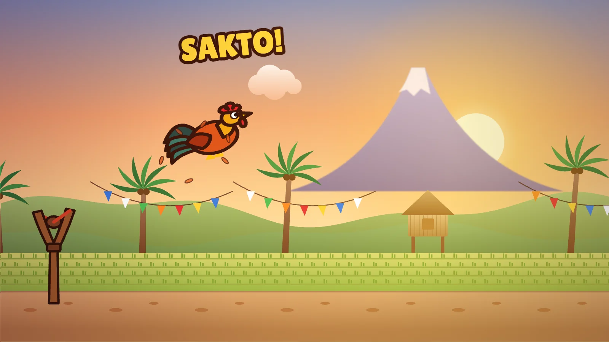

Lipad, Manok!
Launch Tandang from Lolo's giant tirador and fly to Manila Bay

ArcadeTouch · Mouse · KeyboardFree, in the browser
Play Lipad, Manok!About the game
Tandang is a scrappy rooster with one big dream: to stand on the shore of Manila Bay and crow at the sunrise. The trouble is that he lives out in the province, a long way from the city, and roosters are not famous for flying. So Lolo (Grandpa) plants a giant tirador (slingshot) at the edge of the rice paddies, pulls it back, and lets him go.
A flight lasts about a minute, and the first ones end early. Every run earns pesos, though, and pesos buy upgrades, so each launch goes a little farther. The road runs from the Probinsya (countryside) through the Bayan (town) into Maynila (Manila), with the bay at 5 kilometers. Reach it and the story ends, but the track keeps going for as long as you can stay up.
How to play
The game uses one button. Hold it and Lolo pulls the tirador back while a power ring fills and then swings. Let go to launch. If you release while the ring is in the gold zone, you get a SAKTO! (that is Filipino for "just right") and a faster start.
In the air, tap to flap. Each flap lifts Tandang and costs one feather from the bar at the top; you start with three. The real skill is bouncing. The ground is scattered with things to land on: a kalabaw (water buffalo) throws you high, a jeepney roof pushes you forward, a sampayan (clothesline) works like a trampoline, and tricycles and woven mats give smaller bounces. Tap just before you touch one and it becomes a super bounce, which is much bigger, costs no feather, and gives a feather back.
Watch out for two things. A patch of putik (mud) soaks up most of your speed. An aso (dog) can grab Tandang, and you have to tap fast to wriggle free before the run ends. Now and then you will also find a balut that works as a short rocket boost and a payong (umbrella) that lets you glide for a few seconds.
- Keyboard: Space or W does everything: hold to pull, release to launch, tap to flap. The up arrow also works in solo play.
- Mouse: click and hold anywhere on the game, release to launch, click to flap.
- Phone and tablet: touch and hold anywhere, lift to launch, tap to flap.
- 2P Karera (race): two players share one keyboard. Player one uses W or Space, player two uses the up arrow. On a touch screen, each player taps their own half, top or bottom.
Between runs, the shop sells five upgrades: Hila (pull, for launch power), Pakpak (wings, for less drag and a gentler fall), Talbog (bounce), Lakas (strength, for more feathers) and Ipon (savings, for more coins per run). There are also missions, a daily chest, rooster looks to unlock, and a Daily course that is the same for everyone that day, with three tries.
Tips
- Learn the rhythm of the power ring before worrying about anything else. A SAKTO launch is free distance on every single run.
- Save your feathers. Flapping right after launch wastes them; a flap is worth more when it carries you over mud or a dog toward the next kalabaw.
- Super bounces refill feathers, and so does every tenth coin.
- Early on, spread your pesos across Hila and Pakpak.
- If the dog grabs you, mash.
Tandang, the tirador and the long road to Manila
Almost every barrio (village) in the Philippines has roosters, and they start crowing early. The Tagalog word for a rooster is tandang, and manok means chicken. A rooster greeting the dawn is about as Filipino a sound as there is, so Tandang's dream suits him.
The tirador is the homemade slingshot that generations of Filipino kids have whittled for themselves: a Y-shaped fork of wood, two strips of rubber, often cut from an old bicycle inner tube, and a small leather or cloth pouch. Lolo's version is simply that toy made enormous.
The things Tandang bounces on are a tour of everyday life. The kalabaw is the working animal of the rice fields. The tricycle, a motorcycle with a sidecar, carries people around towns, and the jeepney, rebuilt from old military jeeps after the Second World War and painted in loud colors, is the classic ride of the cities. Going from the paddies to the capital is a trip many Filipino families know well, usually with less flapping.